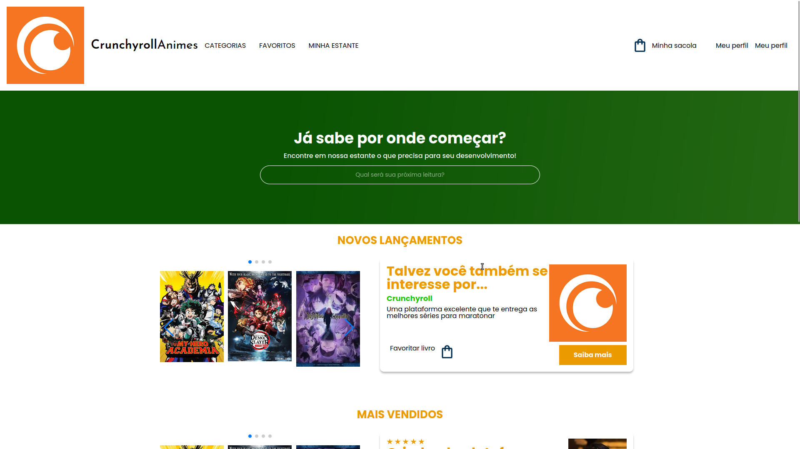
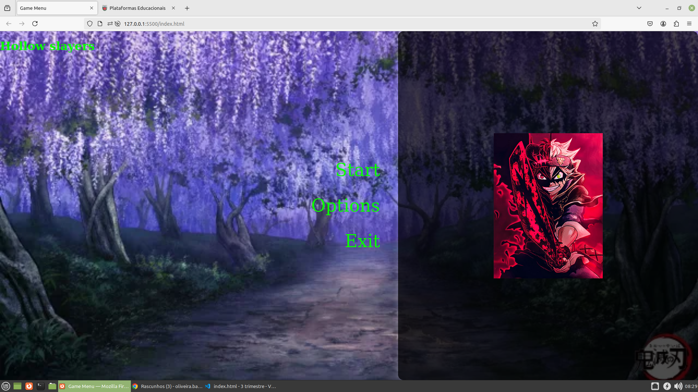
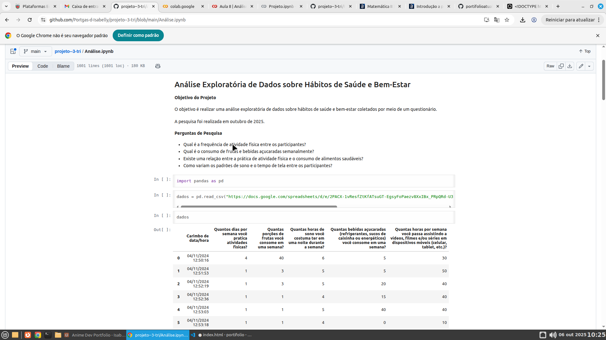
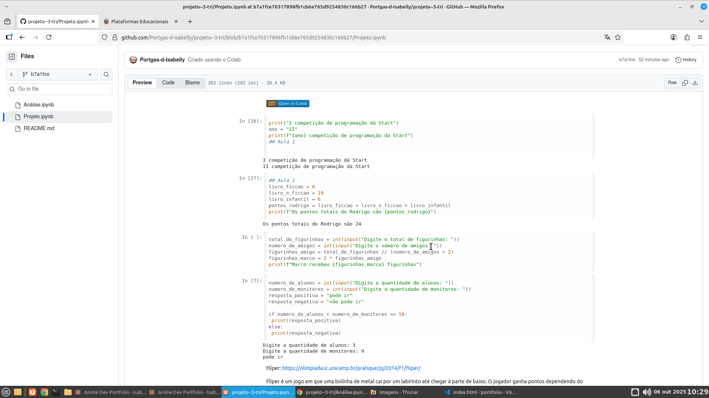
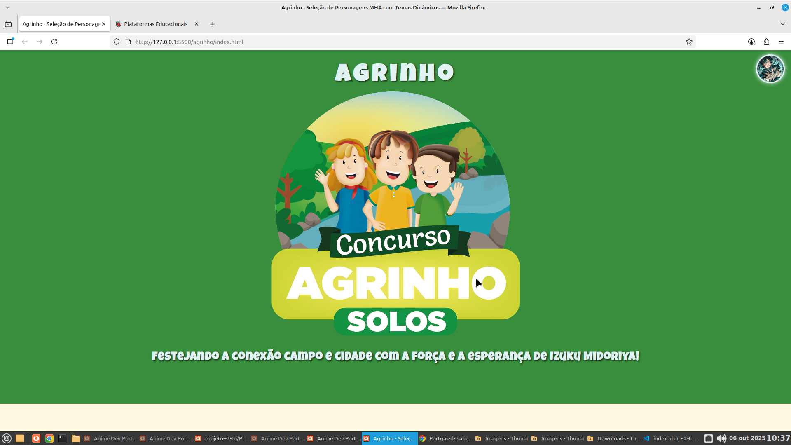

My Hero Academy
Um projeto de site que explica sobre a UA e mostra alguns dos nossos heróis ou vilões queridos de MY HERO ACADEMY, além de uma prévia da introdução da história desse anime.
 Veja o projeto no GitHub
Veja o projeto no GitHub
CrunchyrollAnimes
Um site interativo que mostra referências para os amantes de mangás e animes. O site consiste em uma aba da Crunchyroll com mangás famosos e queridos pelos fãs. Ao abrir o site, as pessoas terão oportunidades de conhecer a CrunchyrollAnimes, que proporciona a chance de conhecer melhor a coleção de animes favoritados pela galera.
 Veja o projeto no GitHubHollow Slayers
Esse site é uma introdução de jogo interativa onde há uma interface de começo de jogo. O nome do jogo é fictício, ou seja, não existe de verdade. Para mexer, é utilizado o mouse, e quando o mouse faz a função de iniciar a introdução dos personagens, os personagens passam de acordo com a música. Há 6 opções de personagens.
 Veja o projeto no GitHubGoogle Colab
Um site que mostra os dados da pesquisa feita com o intuito de pesquisar a saúde e bem-estar
 Veja o projeto no GitHubColab
Um site do google Colab que visa demonstrar desafios propostos pelo alura.
 Veja o projeto no GitHubAgrinho
Um projeto desenvolvido para promover ativamente a campanha do Agrinho de 2025.
 Veja o projeto no GitHubTemporizador
Este site tem o intuito de calcular as expectativas e prazos de minha jornada como otaku
 Veja o projeto no GitHub
Veja o projeto no GitHub
My hero Academy
Um site voltado a mostrar o que tem de melhor neste anime incrível.
 Veja o projeto no GitHub
Veja o projeto no GitHub
Vigilância de senhas
É um sistema programado para gerar uma senha vigilante e segura com até uma força considerável.
 Veja o projeto no GitHub
Veja o projeto no GitHub
Você decide seu futuro Mha
Ferramenta que você decide seu destino no anime.
 Veja o projeto no GitHub
Veja o projeto no GitHub